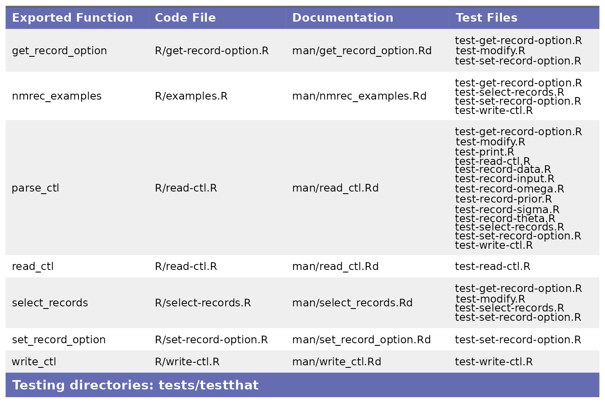

mpn.scorecard is an R package designed to score other R packages on key attributes that help evaluate the risk of adding them to MPN. mpn.scorecard leans heavily on the metrics developed by R Validation Hub’s riskmetric R package, and has additional features related to the scoring and outputs. Each package is first evaluated based on code documentation, maintenance and sustainability, and transparency. Code coverage and R CMD Check results are then tabulated and saved out to a specified location. These metrics are summarized in a scorecard report.
Scoring a Package
You begin by scoring a package tarball, which will evaluate the aforementioned metrics, and save a json of the individual scores to out_dir. Code coverage and R CMD Check results are saved as RDS files to the same location.
results_dir <- score_pkg(
pkg = "package_3.1.0.tar.gz",
out_dir = file.path(tempdir(), "results")
)
#> rcmdcheck for package_3.1.0 passed
fs::dir_ls(results_dir)
#> /tmp/RtmpTFIt3N/results/package_3.1.0/package_3.1.0.check.rds
#> /tmp/RtmpTFIt3N/results/package_3.1.0/package_3.1.0.covr.rds
#> /tmp/RtmpTFIt3N/results/package_3.1.0/package_3.1.0.scorecard.jsonRendering a Scorecard
You can then render a scorecard PDF with the desired risk breaks, which determine the cutoff points for “Low”, “Medium”, and “High” risk. The R CMD Check output and tabulated code coverage will appear in the appendix of the report.
pdf_path <- render_scorecard(
results_dir = results_dir,
risk_breaks = c(0.3, 0.7)
)
browseURL(pdf_path)

Traceability Matrix (optional)
Our version of a traceability matrix maps R package exports to the following parameters:
- R script the export is defined in
- Any relevant documentation (
man/files) - Test files that call the export
You can generate a traceability matrix as a standalone object by not passing a results_dir:
trac_matrix <- make_traceability_matrix("package_3.1.0.tar.gz")To add a traceability matrix to the scorecard, you must follow the steps below:
- Score the package via
score_pkg - Call
make_traceability_matrixusing theresults_dirreturned fromscore_pkg
If an RDS file matching the expected naming convention (<package_tarball_name>.export_doc.rds or package_3.1.0.export_doc.rds in the above example) is found in results_dir, the traceability matrix will be picked up and automatically included. Users can override this by setting add_traceability to FALSE.
results_dir <- score_pkg(
pkg = "package_3.1.0.tar.gz",
out_dir = file.path(tempdir(), "results")
)
#> rcmdcheck for package_3.1.0 passed
make_traceability_matrix("package_3.1.0.tar.gz", results_dir = results_dir)
fs::dir_ls(results_dir)
#> /tmp/RtmpTFIt3N/results/package_3.1.0/package_3.1.0.check.rds
#> /tmp/RtmpTFIt3N/results/package_3.1.0/package_3.1.0.covr.rds
#> /tmp/RtmpTFIt3N/results/package_3.1.0/package_3.1.0.export_doc.rds
#> /tmp/RtmpTFIt3N/results/package_3.1.0/package_3.1.0.scorecard.json
pdf_path <- render_scorecard(
results_dir = results_dir,
risk_breaks = c(0.3, 0.7),
add_traceability = TRUE
)
browseURL(pdf_path)
Comments (optional)
Packages may optionally include a “Comments” text file for additional explanatory notes. Inclusion of this section works the same as a traceability matrix. If a comment file matching the expected naming convention (<package_tarball_name>.comments.txt or package_3.1.0.comments.txt in the above example) is found in results_dir, the section will be automatically be included.
Summary Report
If multiple packages have been scored, you can summarize each of the packages in a summary report using render_scorecard_summary, providing an easy way of summarizing the overall risk associated with each package:
pkg_tars <- c("package_3.1.0.tar.gz", "pkg1_2.0.4.tar.gz", "pkg2_1.6.3.tar.gz", "pkg3_0.3.0.tar.gz")
result_dirs <- purrr::map_chr(pkg_tars, ~ score_pkg(.x, out_dir))
pdf_sum_path <- render_scorecard_summary(result_dirs, snapshot = as.character(Sys.Date()))
browseURL(pdf_sum_path)The report provides additional context, session info, proof points, etc., but will render a table that looks like the one below:
Rendering scorecards for non-R packages
The workflow described above focuses on R packages. Generating scorecards for other types of packages is also supported. In this case, the scoring happens outside of mpn.scorecard, and a directory of results is fed to render_scorecard. The required input format is described at ?external_scores.